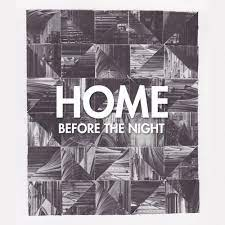
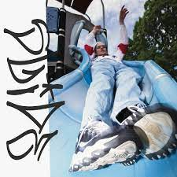

| Video Name | Discription | Length | Youtube Channel | Album Cover |
|---|---|---|---|---|
| We're Finally Landing | My favorite song by Home. Album: Before the Night | 4:32 | Home |  |
| Livin' Loose | Easily my favorite track by George Clanton. Album: Slide | 5:49 | George Clanton |  |
| Camp Night | Another great vaporwave song. Album: St. Francis | 2:21 | Satin Sheets | |
| Night Mood | FM Skyline is my favorite band right now. Album: Deluxe Memory Suite™ | 4:01 | FM Skyline | |
| Resonance | An amazing song that gives you the feeling of nostalgia. Album: Oddyssey | 3:32 | Home | |
| Drive Slow | My favorite song by Windows96. Album: Reflections | 3:48 | Windows96 | |
| Rosentwig - Imagination/Mind Palace | A great single by Rosentwig | 6:47 | Rosentwig | |
| De Lorra - Slow Drip | De Lorra is another one my Favorite artists. His songs are just so catchy. Album: Unconditional | 4:29 | VOID - Electronic Music | |
|